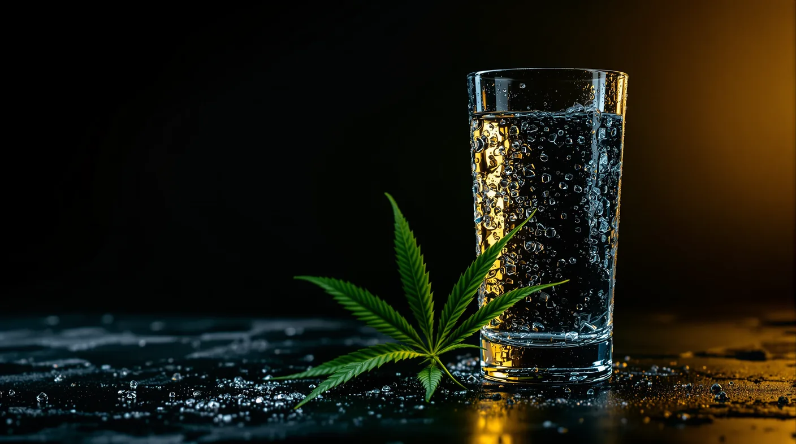

Does Cannabis Dehydrate You? Why Your Mouth Gets Dry
Cottonmouth is about saliva, not proof that your body is low on water. Here is why cannabis dries your mouth and how to stay comfortable.

Key takeaways
- Cottonmouth is a short-term drop in saliva, which is different from your whole body being dehydrated.
- Research links it to cannabinoid receptors in the salivary glands.
- In a controlled study, dry-mouth ratings rose with inhaled THC and peaked within about 30 minutes.
- Sipping water and chewing sugar-free gum help; tobacco and alcohol dry the mouth, and it's wise to limit caffeine.
- A mouth that stays dry, or repeated vomiting with regular use, is a reason to see a doctor.
Does weed dehydrate you? Usually not in the way the question suggests. The dry, sticky feeling people call cottonmouth comes mainly from a short-term drop in saliva, not from your body running low on water. Research points to cannabinoid receptors in the salivary glands as the reason. Real dehydration can still happen around cannabis use, so here's how to tell the two apart and stay comfortable.
Does weed dehydrate you? The short answer
Dry mouth and dehydration can feel alike, but they're different things. Dry mouth, which doctors call xerostomia, means you don't have enough saliva to keep your mouth wet. Dehydration means your body as a whole has lost more fluid than it has taken in.
Cannabis dry mouth is common and well documented. Whether cannabis makes your whole body lose water has had far less research.
Why does weed make your mouth dry?
Saliva does a lot of quiet work. It helps you chew, swallow and taste, washes food away from your teeth and carries minerals that help keep them strong.
Cannabinoid receptors, the same family of receptors that THC acts on, have been found in salivary glands. In lab studies in rats, switching on those receptors in a major salivary gland reduced saliva flow. That matches what people notice after using cannabis: less saliva and a mouth that feels sticky.
The pattern shows up in people, too. In a national survey of nearly 30,000 U.S. adults, run in 2022 and 2023, about 1 in 10 said their mouth was frequently or always dry. People who used cannabis daily had about twice the odds of frequent dry mouth. Odds were highest for people who used cigarettes, e-cigarettes and cannabis together.
What about dry eyes from weed?
Many people notice dry or red eyes, too. Researchers describe dry eye as a frequent complaint among cannabis users, and in the 2018 Johns Hopkins study described below, vaping THC raised ratings of dry, red or irritated eyes. Why it happens is less clear. In a 2020 study in mice, THC reduced tear production in males by acting on CB1 receptors in the nerves that serve the tear gland. It had no such effect in females, and the work was done in mice, not people.
Format by format: smoke, vapes, edibles and drinks
Most careful measurements come from inhaled cannabis.
- Smoked flower. In a 2018 Johns Hopkins study, adults who rarely used cannabis rated their mouths far drier after smoking THC than after a placebo. Dryness peaked within about 30 minutes.
- Vapes. In the same study, vaping the same amount of THC produced even higher dry-mouth ratings than smoking it, along with stronger effects overall. No smoke doesn't mean no cottonmouth.
- Edibles. Swallowed THC reaches the same receptors through your bloodstream, so edibles can dry your mouth too. Fewer controlled studies have measured it.
- Drinks. A THC drink is swallowed like an edible, so the same applies, though sipping slowly keeps a little moisture coming.
Does a stronger product make it worse?
Somewhat, based on limited data. In the Johns Hopkins study, dry-mouth ratings were a little higher after 25 mg of inhaled THC than after 10 mg, whether people smoked or vaped. Vaping raised blood THC higher than smoking an equal dose, and it produced more dryness too.
In short, the more THC that reaches your system, the drier your mouth may feel. A smaller dose is the simplest way to keep cottonmouth mild.
Comfort tips for before, during and after
- Before: drink a glass of water and keep a bottle within reach. Have sugar-free gum or hard candy on hand.
- During: sip water rather than gulping it, and keep your dose modest. Skip alcohol and tobacco, which dry the mouth, and go easy on coffee and energy drinks.
- After: keep sipping, brush your teeth before bed and run a humidifier at night if your mouth tends to feel dry.
Quick fixes for cottonmouth
Here is how to get rid of cottonmouth fast:
- Sip cool water slowly.
- Try sugar-free gum or a sugar-free hard candy. Citrus, cinnamon and mint flavors help get saliva flowing, and products with xylitol may help protect your teeth.
- Take sips of water with snacks to make chewing and swallowing easier.
- Go easy on salty and spicy snacks, which can sting a dry mouth. Our guide to the munchies has more on snacking.
If you dislike dry mouth
No format reliably prevents cottonmouth, since THC itself is behind it. A few choices can keep it milder:
- Lower doses. In the research so far, less THC meant less dryness, so measure your amount and keep it small.
- Breaks between sessions. Daily use was tied to more frequent dry mouth in the national survey.
- No stacking. Tobacco and alcohol dry the mouth on their own, and combining cigarettes, e-cigarettes and cannabis carried the highest odds.
Hydration myths, checked against the evidence
| Myth | What the evidence says |
|---|---|
| Cottonmouth means you're dehydrated | It means less saliva. Lab research ties it to cannabinoid receptors in the salivary glands. |
| Cannabis drains your body's water | There's little research showing that. What's well documented is the drop in saliva. |
| A beer or an energy drink will fix it | Both can make dryness worse. Water and sugar-free gum are better choices. |
| Edibles can't cause cottonmouth | Swallowed THC reaches the same receptors through the bloodstream. |
| Dry mouth is harmless | A short bout is mostly a nuisance, but saliva protects your teeth, so frequent dryness deserves attention. |
When dryness is a reason to see a doctor
See your dentist or doctor if:
- your mouth stays dry most of the time, even on days you don't use cannabis
- you have trouble chewing, swallowing or speaking, mouth sores, a burning feeling or cracked lips
- you take other medicines, since hundreds of medicines can reduce saliva
- your eyes stay dry, red or irritated
Get medical care quickly for repeated bouts of vomiting if you use cannabis regularly. That pattern can signal cannabinoid hyperemesis syndrome, a condition seen in long-term users that can lead to severe dehydration and kidney problems.
Cannabis is for adults 21 and older. Use cannabis responsibly.
Frequently asked questions
Can weed actually dehydrate you?
Not directly, as far as research shows. Cannabis reliably cuts saliva for a while, which is why your mouth feels dry, but there's little evidence that it drains water from your body. You can still get dehydrated on a hot day, during exercise or after drinking alcohol, so keep water nearby. Repeated vomiting with regular use needs medical attention.
Why does cannabis dry out your mouth?
Salivary glands have cannabinoid receptors, the same type THC acts on. In lab studies in rats, switching those receptors on reduced saliva flow. In a controlled study in people, dry-mouth ratings climbed soon after inhaling THC and peaked within about 30 minutes. That's why your mouth can feel sticky even when you've had plenty to drink.
Do edibles cause cottonmouth?
They can. THC reaches the receptors in your salivary glands through your bloodstream, whichever way you take it. Most controlled studies have measured dry mouth after smoking or vaping, though, so it's less clear how often edibles cause it or how strong it gets. Keep water handy with any format and start with a small serving.
Which products feel least drying?
No product is proven to prevent dry mouth. The dose matters most: in a controlled study, more THC meant somewhat drier mouths, and vaping, which delivered more THC than smoking the same amount, produced the most dryness. Lower doses, slower sessions and skipping alcohol and tobacco are your most reliable options.
Sources
- National Institute of Dental and Craniofacial Research (NIH): Dry Mouth nidcr.nih.gov
- Prestifilippo J.P. et al., Inhibition of salivary secretion by activation of cannabinoid receptors, Experimental Biology and Medicine (2006) pubmed.ncbi.nlm.nih.gov
- Spindle T.R. et al., Acute effects of smoked and vaporized cannabis in healthy adults who infrequently use cannabis: a crossover trial, JAMA Network Open (2018) pmc.ncbi.nlm.nih.gov
- Chaffee B.W., Associations of current cigarette, e-cigarette, and cannabis use with xerostomia, JDR Clinical and Translational Research (2026) pubmed.ncbi.nlm.nih.gov
- Thayer A. et al., THC regulates tearing via cannabinoid CB1 receptors, Investigative Ophthalmology and Visual Science (2020) pmc.ncbi.nlm.nih.gov
- Habboushe J., Sedor J., Cannabinoid hyperemesis acute renal failure: a common sequela of cannabinoid hyperemesis syndrome, American Journal of Emergency Medicine (2014) pubmed.ncbi.nlm.nih.gov
For adults 21 and older. Keep cannabis away from children and pets, and never drive after consuming. In New Jersey, cannabis smoking is allowed where cigarette smoking is permitted, unless stated otherwise.
1070 Springfield Ave Suite C, Irvington, NJ 07111